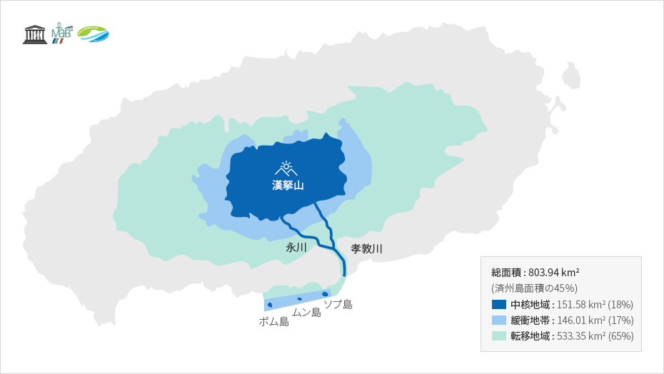

名品自然
- Home
- 一般現況
- 地理
- 名品自然
世界唯一のユネスコ「三冠王」
済州島は東西に約73㎞、南北に41㎞の楕円形の火山島で、島の中心部に韓国で最も高い 標高1,950mの漢拏山が聳え立っています。
火山活動でできた済州島は島全体が「火山博物館」と言えるほど多様で独特な火山地形を誇ります。また、地上には大小の約360のオルム(1)が存在し、地下には約160の溶岩洞窟が島全域に散在しています。小さな島にこのように多くのオルムと洞窟があることは世界的にも非常に稀です。
※ 1) 小規模の火山体を意味する済州の方言

済州世界自然遺産
世界自然遺産(World Natural Heritage) - 2007.07.02.登録
ユネスコは1972年「世界の文化遺産及び自然遺産の保護に関する条約」を採択し、人類全体のために保護されるべき文化と優れた自然を有する地域を世界遺産に登録してきました。
済州島は2007年、韓国で初めて「済州火山島と溶岩洞窟」という名称で漢拏山天然保護区域、城山日出峰、コムンオルム溶岩洞窟系地域が世界自然遺産に登録されましたが、これは済州島全体面積の約10％に該当します。
済州世界ジオパーク
世界ジオパーク(Global Geopark) - 2010.10.01認定
世界ジオパークは地質学的に優れた価値を持つ自然遺産地域を保護し、これを土台にして観光を活性化し、住民所得を向上させることを目的に作られたユネスコのプログラムです。
済州島は2010年10月にユネスコ世界ジオパークに認定されました。

※ 出所 : 済州ジオパーク (http://www.jeju.go.kr/geopark/index.htm)
済州生物圏保存地域
生物圏保存地域(Biosphere Reserve) - 2002.12.16.認定
生物圏保存地域は、ユネスコの人間と生物圏計画(MAB)によって生物多様性の保存と自然資源の持続可能な利用を結合させた陸地及び沿岸(海洋生態系)地域をいい、2019年基準で世界の124ヵ国701ヵ所が指定されています。
済州島は豊富な生物の種と独特な生態系を認められ、2002年にユネスコから漢拏山を中心とした標高200m以上の地域が「生物圏保存地域」に指定され、2019年付属島の楸子島などを含む済州島全体が生物圏保存地域に拡大指定されました。



※ 出所 : 済州世界自然遺産センター (http://www.jeju.go.kr/jejuwnh/unesco/triple.htm)